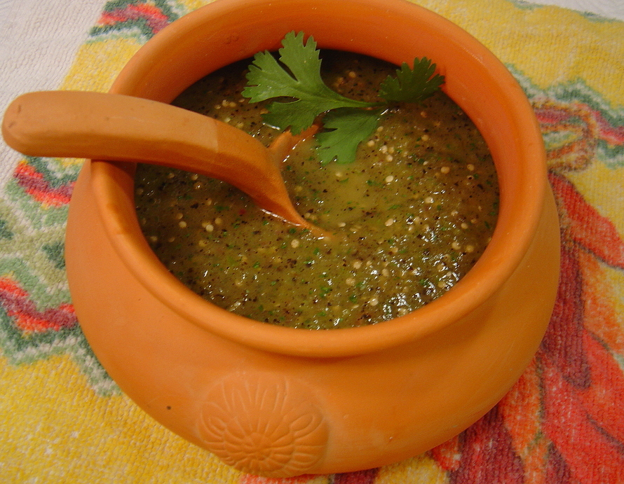

Tomatillo Sauce

A simple roasted tomatillo sauce. It can be eaten on it's own with chips or used as an
excellent verde enchillade sauce.
Ingredients
- 1 lb tomatillos
- Hot Peppers (1 - 2 Jalapenos or 3 - 4 Serrano)
- 1 Large Onion
- 4 -5 Garlic Clove
- 1 1/2 Cups Chicken Stock
- Salt to Taste
Steps
- Take all the vegetables and put them on a rimmed baking sheet. Place under a preheated
broiler. Once softend, blotchy, and blackening flip and roast the other side.
- Cool and then transfer to a blender, make sure to include the juices from the tomatillos. Blend into a course
puree.
- Preheat oil in a large skillit and then fry puree untill thickened, about 2 minutes.
- Add chicken stock and let rethicken.
- Use immediately, or store in fridge for up to 2 weeks